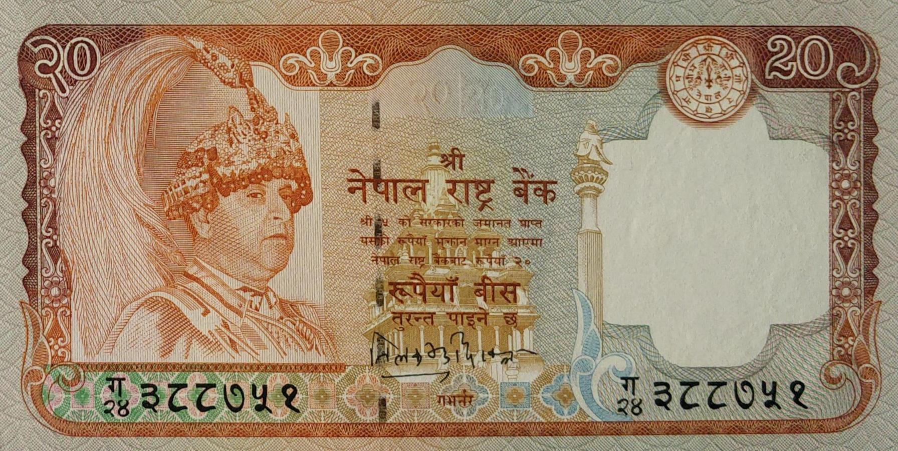

Tilak Bahadur Rawal (Jan 31, 2000 to August 28, 2000) (April 27, 2001 to Jan 17, 2005)

Bijaya Nath Bhattarai (Jan 31, 2005 to June 29, 2007) (July 26, 2009 to March 22, 2010)
- Domination: Rupees 20
- Signature:
- Printer:
- Issued date: Between 2002 to 2005
- Front: Portrait of HM King Gyanendra Bir Bikram Shah Dev & Krishna Mandir, Patan
- Back: Swamp deer (Stag) with Mountains on the background
- Watermark: Plumed crown
- Size: 70 x 138 mm
Facts:
- 12 - Tilak Bahadur Rawal
- 13 - Bijaya Nath Bhattarai
- - Canadian Banknote Co. Ltd
- - De La Rue & Company, Ltd, UK